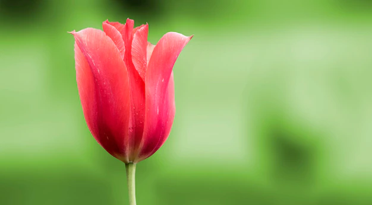
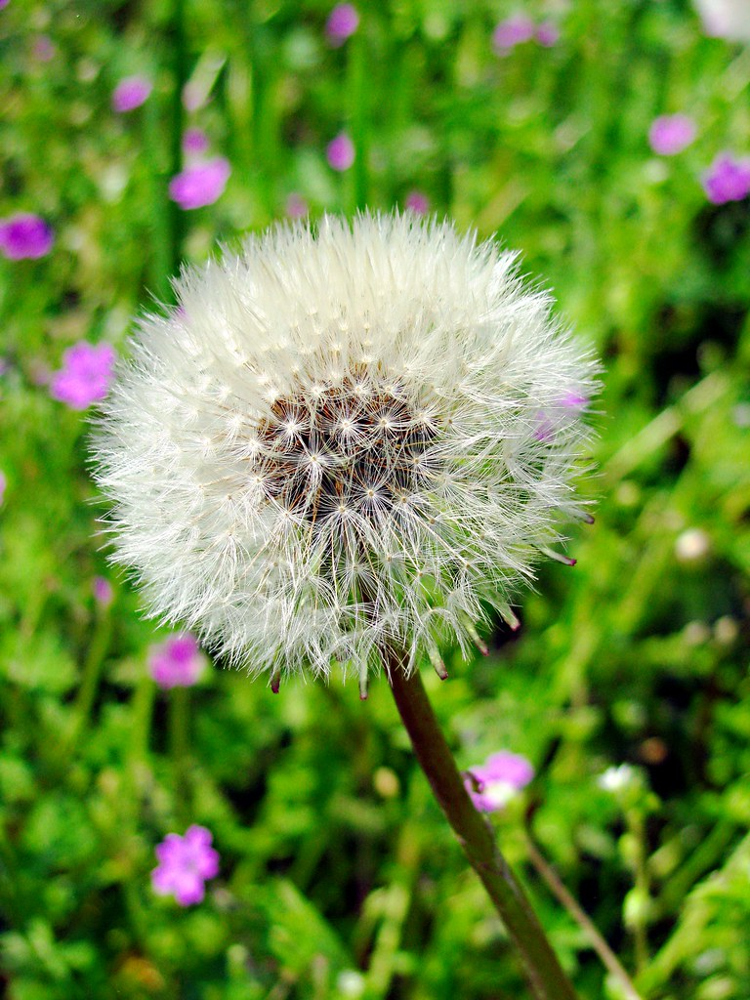

1.
Viola
Voto:9
Comprende oltre 400 specie erbacee annuali o perenni e anche suffruticose, alte da 10 a 20 cm, con fioriture primaverili, in svariati colori e corolle dalla forma caratteristica; generalmente con l'inizio della stagione calda le piante interrompono la fioritura, stimolando la produzione dei semi e concludendo il ciclo vegetativo.
Tritolo
2.
Rosa
Voto:8.5
Rosa è un genere della famiglia delle Rosacee che comprende circa 150 specie, originarie dell'Europa e dell'Asia. Comprende specie cespugliose, sarmentose, rampicanti, striscianti, arbusti e alberelli a fiore grande o piccolo, a mazzetti, pannocchie o solitari, semplici o doppi, frutti ad achenio contenuti in un falso frutto; le specie spontanee in Italia sono oltre 30, di cui ricordiamo la R. canina (la più comune), la R. gallica (poco comune nelle brughiere e luoghi sassosi), la R. glauca (frequente sulle Alpi), la R. pendulina o R. alpina (comune sulle Alpi e l'Appennino settentrionale) e la R. sempervirens.
Stupendo
3.
Girasole
Voto:8
Il fusto nei paesi di origine può superare 4 m. La forma biologica della specie è terofita scaposa, sono piante erbacee che differiscono dalle altre forme biologiche poiché, essendo annuali, superano la stagione avversa sotto forma di seme; sono inoltre munite di asse fiorale eretto, spesso con poche foglie. La pianta ha una pubescenza ruvida.
Bello
4.
Tulipano
Voto:7
Fu portato per la prima volta in Europa nel 1554 dal fiammingo Ogier Ghislain de Busbecq, ambasciatore di Ferdinando I alla corte di Solimano il Magnifico, che ne spedì alcuni bulbi al botanico Carolus Clusius, responsabile dei giardini reali olandesi. Clusius trovò un modo per sviluppare molte varietà di tulipani, nei più svariati colori e forme. La sua coltivazione nei Paesi Bassi iniziò all'incirca a partire dal 1593. I tulipani divennero rapidamente una merce di lusso e uno status symbol, non solo per il loro valore decorativo, ma anche per il valore economico, e crebbero rapidamente di prezzo. Ne nacque tra il 1634-37 la prima bolla speculativa documentata della storia del capitalismo, la famosa bolla dei tulipani, che esplose il 5 febbraio 1637.
Carino

5.
Tarassaco
Voto:6.5
Il tarassaco cresce spontaneamente nelle zone di pianura fino a un'altitudine di 2000 m e in alcuni casi con carattere infestante. È una pianta tipica del clima temperato e, anche se per crescere non ha bisogno di terreni e di esposizioni particolari, predilige maggiormente un suolo sciolto e gli spazi aperti, soleggiati o a mezzombra. In Italia cresce dovunque e lo si può trovare facilmente nei prati, negli incolti, lungo i sentieri e ai bordi delle strade.
Accettabile
